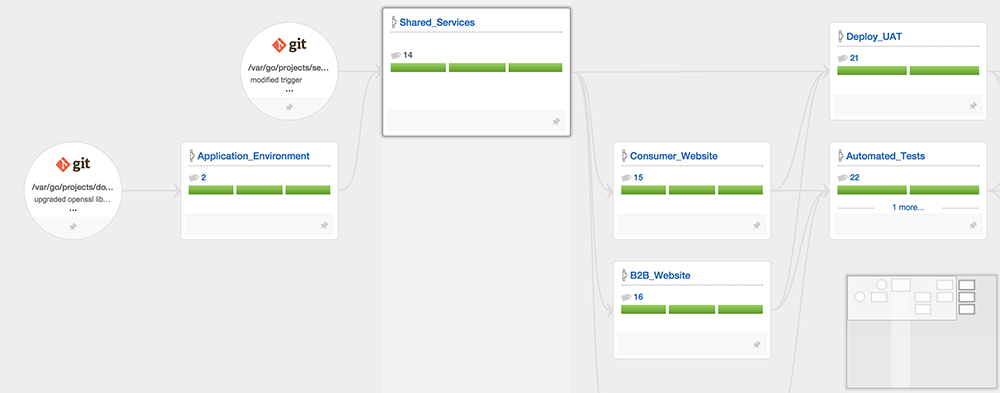

Teams have been automating the build, test and deploy processes of their software for many years, but usually in a very specific "one off" manner. This article walks through 5 key patterns to setting up a successful deployment pipeline, including designing parallel workflows, running tests in parallel, and more.
In 2007 GoCD (then called "Cruise") introduced build pipelines to the masses. Shortly after, Jez Humble (GoCD's original product manager) and David Farley published Continuous Delivery. With these concepts becoming more mainstream, some patterns have emerged. There are certainly more, but these are some that stick out.
1. Build things once
When you're taking software from initial code change to production in an automated fashion, it's important that you deploy the exact same thing you've tested.
Once you've built a binary, you should upload that back to your CD server or artifact repository for later use.
When you're ready to deploy to a downstream system, you should fetch and install that build artifact. This way you make sure that you're running your functional tests on the exact thing you built and that you're going to deploy.
2. Run tests in parallel
Any moderately complicated application is likely to have a very large number of of automated tests. Every time someone on the Mingle team at ThoughtWorks commits some code, the application is subjected to well over 11,000 automated tests. If the team ran those tests back to back, they would take a couple days. Of course you can't wait a couple days before you know the state of your software.
Too often this leads to teams only running part of their tests.
What you should do is split those tests up into manageable size chunks and run them in parallel. In the case of the Mingle team those tests run on 65 GoCD agents at the same time.
Of course it's also vitally important that you're able to quickly determine what went wrong if something fails, so you should make sure the tests results from all of the jobs can be viewed in one consolidated place.
3. Design parallel workflows
It's not uncommon for teams to practice Continuous Integration on small parts of code before "throwing it over the wall" to someone else to put that together with other parts of the application. In these cases, it's usually OK to set up a linear flow. The entire thing might run end to end in a just few minutes.
One of the most common mistakes when graduating from Continuous Integration (CI) to Continuous Delivery is applying the same linear thinking. When we're automating the progression of all of the code from commit to deployment on a production system, it's very likely that there will be a much longer running set of jobs to be done.
Take the example in the image below for example. Here we have a team who has decided to implement a manual approval for user acceptance. We want to make it easy for the team responsible to do a one click deployment to their application, but they may not look at it immediately. There's really no reason we can't run the automated acceptance tests while that is going on.
Hopefully you noticed one other really important thing about the image above. The production pipelines have not run. If you're doing things in parallel it's important that your Continuous Delivery system is smart about handling dependencies. This is a screenshot from GoCD, which uses fan in/fan out dependency management to make sure the project doesn't get deployed until both of the upstream pipelines have gone green.
4. Verify on a production-like environment
Jez Humble tells a story about developing and testing a Java application on Windows machines and then deploying it on Solaris. The short version of the story; it didn't work.
Ideally you should be staging and testing on the same set up. If your staging and production environments are exactly the same, you can even use them interchangeably in a blue / green deployment pattern. It's hard to imagine a better way to be sure your software will work when you turn users loose on it.
If you're deploying to very large environments where it's just not practical to have an exact duplicate, you should still duplicate the technology. In other words, if you your web application runs on a cluster of 1,000 machines in production, you should verify that application on a cluster, even if it's only 2 machines.
One of the reasons people are so excited about advancements in container technology is the help they provide in this area. If you use something like Docker to develop, test and deploy your applications you have a quite a bit more control over making sure things always work the same way.
5. Manage your environments in a pipeline too
In many cases it's easier to break an application with a configuration change than with a bug introduced in the source code. We've all heard the comment "it works on my machine".
All of your environments must be managed using an automated system and then verified with the same rigor you use on your software.
In the value stream map below you'll see that changes to our environments are submitted as code to Git. From there the Application_Environments pipeline builds our container, verifies is and then stores it on our registry. That change kicks off the rest of our build / test / deploy pipelines in exactly the same way an application code change would.

Conclusion
These are just a few keys to setting up a successful deployment pipeline. Do you have others you believe are key? Feel free to comment below.